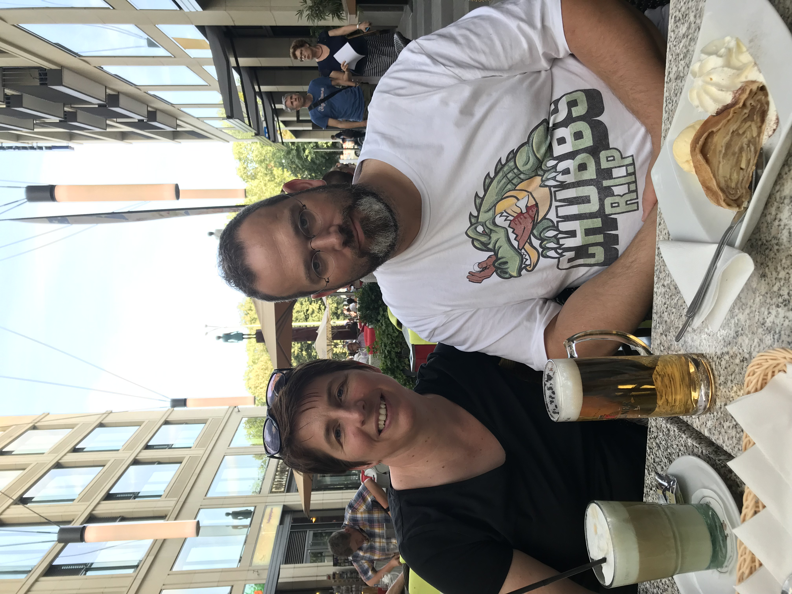

<!-- The circle icons use Font Awesome's stacked icon classes. For more information, visit http://fontawesome.io/examples/ -->
<section id="services" class="services bg-primary">
  <div class="container">
    <div class="row text-center">
      <div class="col-lg-10 col-lg-offset-1">
        <h2>Eckdaten und Aspekte</h2>
        <hr class="small">
        <div class="row">
          <div class="col-md-3 col-sm-6">
            <div class="service-item">
              
              <!--
              <span class="fa-stack fa-4x">
              <i class="fa fa-circle fa-stack-2x"></i>
              <i class="fa fa-cloud fa-stack-1x text-primary"></i>
              </span>
              -->
              <h4>
                <strong>Wiebkes Profil</strong>
              </h4>
              <p>
                Tagespflege seit 2009, ausgebildete Krankenschwester, 7 Jahre im Beruf. 
                Geboren im August 1974 in Wilhelms&shy;haven, verheiratet mit Daniel Potthast (geboren 1977), Kinder Marc und Merle (2003 und 2007).
                Kater Tiger.
              </p>
              <a href="https://kleinetigerbande.de/downloads/kindertagespflege-wiebke-potthast-konzeption.pdf#page=3" class="btn btn-light">Mehr...</a>
            </div>
          </div>
          <div class="col-md-3 col-sm-6">
            <div class="service-item">
              <span class="fa-stack fa-4x">
              <i class="fa fa-circle fa-stack-2x"></i>
              <i class="fa fa-home fa-stack-1x text-primary"></i>
            </span>
              <h4>
                <strong>Rahmenbedingungen</strong>
              </h4>
              <p>
                Erdgeschoss eines Einfamilien&shy;hauses am Ende einer Sackgasse (Kinderzimmer, Wohn-Esszimmer, WC, zusammen 60m²) und ein 450m² großer Garten.
                Maximal 5 Kinder, Wochentags zwischen 8 und 15 Uhr; Urlaub nur in Ferienzeiten.
              </p>
              <a href="https://kleinetigerbande.de/downloads/kindertagespflege-wiebke-potthast-konzeption.pdf#page=4" class="btn btn-light">Mehr...</a>
            </div>
          </div>
          <div class="col-md-3 col-sm-6">
            <div class="service-item">
              <span class="fa-stack fa-4x">
              <i class="fa fa-circle fa-stack-2x"></i>
              <i class="fa fa-graduation-cap fa-stack-1x text-primary"></i>
            </span>
              <h4>
                <strong>Pädagogischer Ansatz</strong>
              </h4>
              <p>
                Individuelle Betreuung, Stärkung des Selbstbewusstseins und der Eigenständigkeit, respektvoller Umgang.
                Förderung der Grob&shy;motorik (z.B. Krabbeln, Laufen, Tanzen), Feinmotorik (z.B. Essen, Puzzeln, Malen) und Sprache.
              </p>
              <a href="https://kleinetigerbande.de/downloads/kindertagespflege-wiebke-potthast-konzeption.pdf#page=5" class="btn btn-light">Mehr...</a>
            </div>
          </div>
          <div class="col-md-3 col-sm-6">
            <div class="service-item">
              <span class="fa-stack fa-4x">
              <i class="fa fa-circle fa-stack-2x"></i>
              <i class="fa fa-child fa-stack-1x text-primary"></i>
            </span>
              <h4>
                <strong>Eingewöhnung</strong>
              </h4>
              <p>
                Vier Phasen über bis zu 4 Wochen: Schnuppern mit Bezugsperson zurm Erlernen des Ablaufs,
                "Rückzug" der noch anwesenden Bezugsperson, Verabschieden und zeitweilige Abwesenheit
                und zuletzt immer längere Abwesenheit.
              </p>
              <a href="https://kleinetigerbande.de/downloads/kindertagespflege-wiebke-potthast-konzeption.pdf#page=10" class="btn btn-light">Mehr...</a>
            </div>
          </div>
        </div>
        <!-- /.row (nested) -->
      </div>
      <!-- /.col-lg-10 -->
    </div>
    <!-- /.row -->
  </div>
  <!-- /.container -->
</section>
